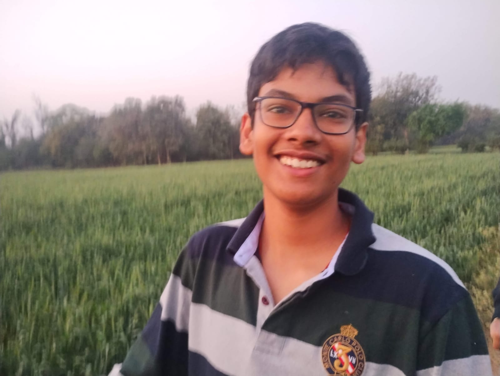

Welcome to my personal resume website.
Driven and enterprising business student at IIM Bangalore with a strong interest in entrepreneurship, leadership and technology-driven ventures.
BBA in Digital Business and Entrepreneurship – IIM Bangalore (2026–Present)
Class XII (CBSE) – Commerce with Mathematics
Delhi Public School, Azad Nagar, Kanpur – 93% (2026)
Class X (CBSE)
Delhi Public School, Azad Nagar, Kanpur – 94% (2024)
Secured first prize in a nationwide competition, outperforming 500+ teams from across India.
Secured first position with the business plan for Get My Team at IIT Kanpur.
Also received the Best Pitch Award for delivering the most compelling presentation.
Captained the school team of 8 players to a second-place finish among schools across Kanpur.
Delhi Public School, Azad Nagar, Kanpur (2024–2026)
Spearheaded the development of multiple business pitches and business plans.
Published 10+ articles on startup news and entrepreneurship.
Delhi Public School, Azad Nagar, Kanpur (2024–2026)
Led and mentored a team of 8 players in inter-school tournaments.
Guided the team to 2nd position at the Kanpur Sahodaya Inter-School Chess Competition.
Contributed to the further development of a business idea for a mobile app that enables users to:
The business idea won first place at the Youth Entrepreneurship Challenge and the Young Entrepreneurs Business Plan Competition at IIT Kanpur.
Email: akshat2008m@gmail.com
Phone: 9839477738